(14B)
Figure 14: Viewing DNA/GC content and 6-frame translation. (a) low magnification; (b) high magnification
This is an extensive tutorial to take you through the main features and gotchas of configuring GBrowse as a server. This tutorial assumes that you have successfully set up Perl, GD, BioPerl and the other GBrowse dependencies. If you haven't, please see the GBrowse HOWTO During most of the tutorial, we will be using the "in-memory" GBrowse database (no relational database required!) Later we will show how to set up a genome size database using the berkeleydb and MySQL adaptors.
Important:This tutorial is designed for GBrowse 2.00 and will not work with earlier versions of the software.
We will be working with simulated Volvox genome annotation data. The database will be named "volvox" and GBrowse will be invoked with this URL:
http://localhost/cgi-bin/gbrowse2/gbrowse/volvox
These directories contain data files used during the tutorial:
To introduce you to the system we will be using a file-based database which allows GBrowse to run directly off text files. To prepare this database for use, find the GBrowse databases directory which was created in your Apache web server directory at the time of installation. It should be located at /var/lib/gbrowse2/databases, but check to make sure.
Similarly, check that you can find the gbrowse.conf configuration directory. It should be located at /etc/gbrowse2 and contain the main configuration file "GBrowse.conf" and the example yeast genome datasource file "yeast_simple.conf" (among several others).
Now you will change the permissions of the database and configuration directories so that you can write to them without root privileges. This is only an issue on Unix systems, and Windows users can safely ignore this step.
% su Password: ********* # chown my_user_name /var/lib/gbrowse2/databases # chown my_user_name /etc/gbrowse2 # exit %
(Be sure to replace "my_user_name" with your login name!)
Now look around inside the databases directory. There should be a single subdirectory named "yeast_chr1+2". The yeast subdirectory is where the example yeast chromosomes 1 and 2 data set is stored.
You will create an empty volvox subdirectory, and make it world writable. On Unix systems:
% cd /var/lib/gbrowse2/databases % mkdir volvox % chmod go+rwx volvox
NOTE: The "%" sign in these examples is the command-line prompt. On Windows systems, the command-line prompt is something like C:\Program Files\Apache Group\Apache2\htdocs\databases>. Unix systems are more variable, but the prompt usually ends with a "%" or a "#". In all the examples in this tutorial, what you type is rendered in boldface, while prompts and command-line results are shown in medium typeface.
On Windows systems, use the file manager ("Explorer") to create a new folder named "volvox." If you are using Windows NT, 2000 or XP, right click on the new folder and grant write privileges to all.
You'll now put the first of several data files into the volvox database directory. In the data_files subdirectory of this tutorial you will find the file volvox_remarks.gff3. Copy this into the volvox database directory. On Unix systems:
% cd /var/www/gbrowse2 % cp tutorial/data_files/volvox_remarks.gff3 databases/volvox
On Windows systems, use Explorer to copy the file into the volvox database directory.
Now we will need a GBrowse config file to tell GBrowse how to render this data set. In the subdirectory /var/www/gbrowse2/tutorial/conf_files, you will find a sample configuration file named volvox.conf. Copy this into your GBrowse configuration directory (/etc/gbrowse2).
You'll now edit the main GBrowse.conf configuration file to tell it about the new data source. Open /etc/gbrowse2/GBrowse.conf with a text editor, scroll to the bottom, and add this stanza to the bottom of the file:
[volvox] description = Tutorial database path = volvox.conf
Be sure to leave a blank line between the bottom of the previous stanza and the top of the new one (i.e., there should be a blank line above "[volvox]").
You should now be able to view the data set. Point your web browser at http://localhost/cgi-bin/gb2/gbrowse/volvox and type in "ctgA" in the search box. The result is shown in Figure 1.
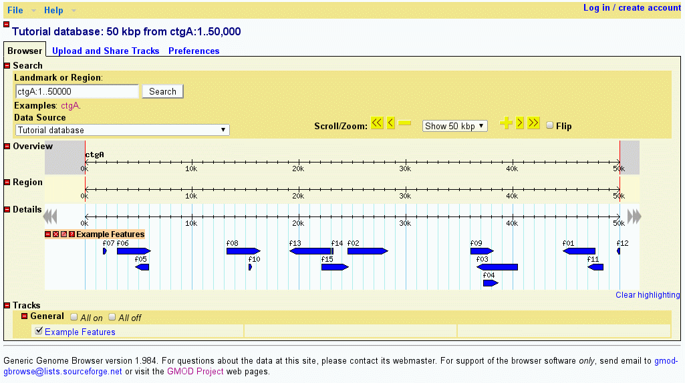
Figure 1: volvox_remarks.gff3 data with volvox.conf config file.
If for some reason you get a blank page or an "Internal server error," there are a couple of things to check. First, open the file volvox.conf with a text editor ("Notepad" on Windows systems, emacs, pico or vi on Unix systems) and confirm that the path to the volvox database directory in this section is correct:
[GENERAL] db_adaptor = Bio::DB::SeqFeature::Store db_args = -adaptor memory -dir '/var/lib/gbrowse2/databases/volvox'
If there is a space in "/var/www/gbrowse2" then you must be certain to put single quotes around the path as shown in the example above.
Next check that the volvox_remarks.gff3 file does exist inside the volvox database directory and that it is readable by all users on your system. Similarly, check that the volvox.conf configuration file is in the same directory as yeast.conf, and that it is readable by all users on your system.
Microsoft Windows has an unpleasant tendency to add a ".txt" extension to files without warning. If something seems to be wrong with the config or GFF file and you can't figure out what, check that the file extension hasn't been modified. To avoid this phenomenon, I suggest that you select "All File Types" from the popup menu in the File Save dialog. You might also want to configure your Folder display to show known file extensions.
If you're still having no luck, check the bottom of the Apache server error log for error messages. This file is located in various places depending on how Apache is installed. Look for the file error_log, typically located in /usr/local/apache/logs, C:\Program Files\Apache Group\Apache2\logs, /var/log/www, or /var/log/httpd. The error message will usually point you in the right direction.
If this doesn't fix the problem, please stop the tutorial and send an e-mail to GBrowse support at gmod-gbrowse@lists.sourceforge.net. Someone will be happy to assist you.
Let's look at the data file we loaded in detail now. If you open the volvox_remarks.gff3 file in a text editor, you will see that it contains a series of 15 genome "features" that look like this:
ctgA example contig 1 50000 . . . Name=ctgA ctgA example remark 1659 1984 . + . Name=f07;Note=This is an example ctgA example remark 3014 6130 . + . Name=f06;Note=This is another example ctgA example remark 4715 5968 . - . Name=f05;Note=Ok! Ok! I get the message. ctgA example remark 13280 16394 . + . Name=f08 ...
Each feature has a "source" of "example", a type of "remark", and occupies a short range (roughly 1.5k) on a contig named "ctgA." In addition to the features themselves, there is an entry for the contig itself (type "contig"). This entry is needed to tell GBrowse what the length of ctgA is.
The load file uses a standard known as GFF3 (General Feature Format version 3). Each line of the file corresponds to a feature on the genome, and the nine columns are separated by tabs.
The 9 columns are as follows:
Alias=M19211,gna-12,GAMMA-GLOBULINOther good stuff can go into the attributes field, as we shall see later.
It is very important to have a full-length entry (such as the one for ctgA) for each reference sequence mentioned in the first column of the GFF3 file. However, the reference sequence can have any source and type you choose. Commonly used types are "clone", "chromosome" and "contig."
Now we'll look at the configuration file in more detail. Using a text editor, open the volvox.conf file from its location in the gbrowse.conf configuraton directory. (If you mess up, you can always copy a fresh version from volvox.conf in the tutorial directory).
At the top is a [GENERAL] section which defines basic things such as the database backend to use, the path to the database files, which plugins to activate, and which tracks to show by default. In the volvox.conf example:
We'll discuss how to customize these options later. For now, focus on the section at the bottom of the file, which starts with the line:[GENERAL] db_adaptor = Bio::DB::SeqFeature::Store db_args = -adaptor memory -dir '/var/lib/gbrowse2/databases/volvox' # just the basic track dumper plugin plugins = TrackDumper # list of tracks to turn on by default default features = ExampleFeatures # size of the region region segment = 10000 # examples to show in the introduction examples = ctgA # feature to show on startup initial landmark = ctgA:5000..10000
### TRACK CONFIGURATION ###:
[ExampleFeatures] feature = remark glyph = generic stranded = 1 bgcolor = blue height = 10 key = Example Features
This is a "stanza" that describes one of the tracks displayed by GBrowse. The track has an internal name of "ExampleFeatures" which you can use in the URL to turn the track on. The internal name is enclosed by square brackets. Names can be any combination of printable characters and whitespace, but can not contain the hyphen ("-") character (you can use the underscore "_" character instead).
Following the track name are a series of options that configure the track. The "feature" option indicates what feature type(s) to display inside the track. It's currently set to display the "remark" feature type. The "glyph" option specifies the shape of the rendered feature. The default is "generic", which is a simple filled box, but there are dozens of glyphs to choose from. The "stranded" option tells the generic glyph to try to display the strandedness of the feature -- this is what creates the little arrow at the end of the box. "bgcolor" and "height" control the background color and height of the glyph respectively, and "key" assigns the track a human-readable label.
Let's experiment with changing the track definition. First, let's change the color of the glyph. With your text editor, change the bgcolor option from blue to "orange", save it, and reload the page. The features should change immediately as shown in Figure 2
Figure 2: A Feature of a Different Color
Note: Many of the screenshots in this tutorial are from earlier versions of GBrowse and may not look exactly the same as the current version.
Please experiment with other changes! Try changing the height to 5, the key to "Skinny features" and the stranded option to 0 (which means "false"). Just by changing a few options, you can create a very distinctive track.
Now let's try changing the glyph. One of the standard glyphs was designed to show PCR primer pairs and is called "primers". Change "glyph = generic" to "glyph = primers" and reload the page. Depending on other changes that you might have made earlier, the result will look something like Figure 3.
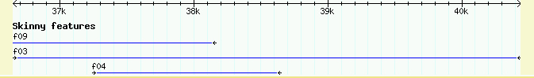
Figure 3: Using the primers Glyph
We'll see other examples of glyphs later on. To get a list of the most popular glyphs and the options that are available for them, see the file CONFIGURE_HOWTO.txt, located in the docs/ subdirectory of the GBrowse distribution. Or for the gory and bleeding edge details, run the command:
% glyph_help.pl -l
This will give you a list of all the glyphs. Running the command with the name of the glyph will give you copious documentation on all the options the glyph recognizes.
By default, GBrowse will display the name of the feature above its glyph provided that there is sufficient space to do this. Optionally, you can also attach some descriptive text to the feature. This text will be displayed below the feature, and can also be searched.
You can place descriptions, notes and other comments into the ninth column of the GFF load file. The example file volvox_domains.gff3 shows how this is done. An excerpt from the top of the file looks like this:
ctgA example polypeptide_domain 11911 15561 . + . Name=m11;Note=kinase ctgA example polypeptide_domain 13801 14007 . - . Name=m05;Note=helix loop helix ctgA example polypeptide_domain 14731 17239 . - . Name=m14;Note=kinase ctgA example polypeptide_domain 15396 16159 . + . Name=m03;Note=zinc finger
This defines several new features of type "polypeptide_domain". The ninth column, in addition to giving each of the motifs names adds a "Note" attribute to each feature. As described earlier, each attribute is a name=value pair separated by semicolons.
The attribute named Note is automatically displayed and made searchable. To see this work, add volvox_domains.gff3 to the volvox database directory. You can do this just by copying the file into /var/lib/gbrowse2/databases/volvox so that the directory contains both the original volvox_remarks.gff3 and the new volvox_domains.gff3 files.
To display this newly-loaded data set, open up volvox.conf and add the following new stanza to the config file:
[Motifs] feature = polypeptide_domain glyph = span height = 5 description = 1 key = Example motifs
This defines a new track whose internal name is "Motifs." The corresponding feature type is "motif" and it uses the "span" glyph, a graphic that displays a horizontal line capped by vertical endpoints. The height is set to five pixels, and the human-readable key is set to "Example motifs." A new option, "description" is a flag that tells GBrowse to display the Note attribute, if any. Any non-zero value means true.
After updating the configuration file, you will need to reload the browser page and turn on the "Example motifs" checkbox below the main image. The result is shown in Figure 4.
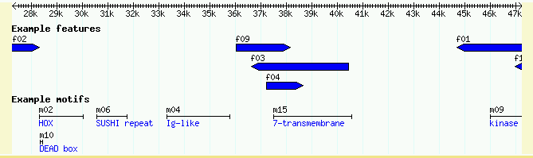
Figure 4: Showing the Notes attribute
A copy of this config file is also available for you to use in volvox2.conf.
To show that GBrowse will search the notes for keyword matches, try typing in "kinase." You will be presented with a list of all the motifs whose Note attribute contains the word "kinase."
GBrowse has a very flexible search feature. You can type in the name of a reference sequence, such as "ctgA", and it will display the entire thing, or you can type in a range in the format "ctgA:start..stop". Try "ctgA:5000..8000" to see this at work.
In addition, GBrowse can search for features by name. Anything that has a Name or Alias attribute in the GFF3 file can be searched for by name. For example, try searching for "f10" or even "f1*". The only drawback to this is that you may have name collisions. For example, some research communities distinguish genes from their products using differences in capitalization, for example hga and HGA. However, GBrowse's searches are case insensitive. To avoid name collisions, you can give each type of feature a distinctive naming prefix, for example "Gene:hga" and "Protein:HGB".
To illustrate how this works, have a look at volvox_geneproducts.gff3:
ctgA example remark 1000 2000 . . . Name=hga ctgA example protein_coding_primary_transcript 1100 2000 . + . Name=Gene:hga ctgA example polypeptide 1200 1900 . + . Name=Protein:HGA ctgA example protein_coding_primary_transcript 1600 3000 . - . Name=Gene:hgb ctgA example polypeptide 1800 2900 . - . Name=Protein:HGB
Copy volvox2b.gff3 into the databases/volvox folder. Now add the following configuration stanza to volvox.conf to create a track that displays both protein_coding_primary_transcript and polypeptide features:
[NameTest] feature = protein_coding_primary_transcript polypeptide glyph = generic stranded = 1 bgcolor = green height = 10 key = Name test track
This stanza creates a new track named "Name test track" and displays features of type "protein_coding_primary_transcript" and "polypeptide" using green generic glyphs that are 10 pixels high. When you look at the data file, you'll see that there are three things potentially named "HGA", a remark which uses the unqualified name, a gene which uses the qualified name "Gene:hga", and a polypeptide region which uses the qualified name "Protein:HGA." There is also a protein_coding_primary_transcript named "Gene:hgb" and a protein named "Protein:HGB." (Note, in this track we are using slightly awkward sequence ontology terms, like "protein_coding_primary_transcript," rather than more natural terms like "gene" in order to avoid these example features from appearing in the real "gene" track that we create later on in this tutorial.)
To see how GBrowse searches for names, type "HGA" (either upper or lowercase) in the search textbox and press "Search." Because the search term matches three remark whose unqualified name is HGA, GBrowse will bring up the region between 1000..2000 and highlight the HGA remark.
Now search for "Protein:HGA." Because you searched with the qualified name, GBrowse will find and highlight the protein feature.
Now try to search for "HGB." This search fails because HGB only exists in qualified form in the database. You can still, however, search for "Gene:HGB" or "Protein:Hgb" (capitalization doesn't matter). This may or may not be the behavior that you desire. If you would like GBrowse to search through qualified names when the user types the unqualified version, you can configure this easily by adding the following line to volvox.conf under the [General] section:
automatic classes = Gene Protein
This option directs GBrowse to search for the unqualified name first, followed by names prefixed with "Gene:" and then names prefixed with "Protein:". Whichever is found first will be displayed. Now searching for "HGB" will find "Gene:hgb". Swapping the order of Gene and Protein on this line will cause the "Protein:HGB" to be found.
Another way to approach this is to make liberal use of the Alias attribute. For example:
ctgA example remark 1000 2000 . . . Name=Remark:HGA;Alias=hga ctgA example protein_coding_primary_transcript 1100 2000 . + . Name=Gene:hga;Alias=hga ctgA example polypeptide 1200 1900 . + . Name=Protein:HGA;Alias=hga ctgA example protein_coding_primary_transcript 1600 3000 . - . Name=Gene:hgb;Alias=hgb ctgA example polypeptide 1800 2900 . - . Name=Protein:HGB;Alias=hgb
This assigns the alias of "hga" to each of the three HGA features, and an alias of "hgb" to each of the two HGB features. This keeps the identities of these features distinct so that you can find particular ones by typing in the fully qualified name ("Gene:hga"), but find all candidates when you type in the unqualified name. For instance, when you search with "hga", GBrowse will now offer you three matches:
Figure 5: Searching for aliases
To try this out, simply open the installed volvox2b.gff3 file with a text editor and edit it to match the example above.
Note: GBrowse caches track images for performance reasons. If you make some changes to the data or config files and don't get the expected behavior, try turning off caching by going to the Preferences link, and turning off the checkbox marked "Cache tracks."
The next topic we'll cover in this tutorial is configuring GBrowse's
outgoing links. When the user clicks on a glyph in the details image,
he will be taken to another page by following a URL. The URL to
follow is generated from the link option. The default
link option is located in the [TRACK DEFAULTS] section of the config
file; you can specify track-specific links by placing a
link option in one or more of the individual track
stanzas.
The volvox.conf track defaults looks like this:
[TRACK DEFAULTS] glyph = generic height = 10 bgcolor = lightgrey fgcolor = black font2color = blue label density = 25 bump density = 100 # where to link to when user clicks in detailed view link = AUTO
In this case, we've been using a special link URL of "AUTO." This generates an automatic link to a helper script named "gbrowse_details." If you click on some of the features in the current volvox page you'll get an idea of what this script displays.
We're going to override the default link rule for the motif track. There's nothing sensible to link to, so we'll link to Google using first the motif's name, and then the motif's description.
Go to the [Motifs] stanza in the volvox.conf config file and modify it so that it looks like this:
[Motifs] feature = polypeptide_domain glyph = span height = 5 description = 1 link = http://www.google.com/search?q=$name key = Example motifs
The only change we've made is to add a "link" option to the stanza, where the value is a Google search URL. "$name" is a Perl variable. GBrowse will fill in this variable with the name of the motif. Reload the page and click on a motif to see that this works as advertised ("m01," "m02" and the other example motifs are similar to the names for galactic clusters, so be prepared for some astronomy hits).
It would be more sensible to link to the description of the motif, for example "helix loop helix." Fortunately we can do that too. Just change the link option to:
link = http://www.google.com/search?q=$description
There are a large number of possible variables that you can use inside link rules. See the CONFIGURE_HOWTO document in the GBrowse distribution for the full list. You can also construct links using Perl callbacks as described in the section on displaying ESTs. This gives you the ability to generate any arbitrary URL.
If you want nothing to happen when the user clicks on a feature, just set link to empty ("link = ").
The last thing we'll do is to change the behavior of the [Motif] track so that:
These changes are easy:
[Motifs] feature = polypeptide_domain glyph = span height = 5 description = 1 link = http://www.google.com/search?q=$description link_target = _blank title = Search Google for $description. key = Example motifs
There's now a link_target option. This contains the name
of a browser window in which to load the content when the user clicks
on the feature. If there's no window of that name, the browser will
create a new window and give it the desired name. Choose an ordinary
name like "Google" if you want the Google content to be loaded into
the same window each time, or choose "_blank" as we've done here in
order to pop up a new fresh window each time the user clicks.
The title option contains a bit of text that will be
displayed whenever the user hovers the mouse over the feature for a
second or two. The same variable substitution rules apply, so when
the user mouses over feature "m06", a balloon will pop up that says
"Search Google for SUSHI repeat." Give it a try!
The title option is a simple way to add popup balloons to tracks. In addition to this feature, GBrowse can display popup balloons when the user hovers over or clicks on a feature. The balloons can display arbitrary HTML, either provided in the config file, or fetched remotely via a URL. You can use this feature to create multiple choice menus when the user clicks on the feature, to pop up images on mouse hovers, or even to create little embedded query forms. See http://mckay.cshl.edu/balloons.html for examples.
To activate custom balloons, add ``balloon hover'' and/or ``balloon click'' options to the track stanzas that you wish to add buttons to. You can also place these options in [TRACK DEFAULTS] to create a default balloon.
``balloon hover'' specifies HTML or a URL that will be displayed when the user hovers over a feature. ``balloon click'' specifies HTML or a URL that will appear when the user clicks on a feature. The HTML can contain images, formatted text, and even controls. Examples:
balloon hover = <h2>Gene $name</h2>
balloon click = <h2>Gene $name</h2>
<a href='http://www.google.com/search?q=$name'>Search Google</a><br>
<a href='http://www.ncbi.nlm.nih.gov/entrez/query.fcgi?db=pubmed&term=$name'>Search NCBI</a><br>
For example, to add a balloon to the motifs track of the Volvox browser, add "balloon tips = 1" near the top of the volvox.conf file, and then add balloon hover and balloon click options like this:
[Motifs]
feature = polypeptide_domain
glyph = span
height = 5
description = 1
balloon hover = <h2>Gene $name</h2>
balloon click = <h2>Gene $name</h2>
<a href='http://www.google.com/search?q=$name'>Search Google</a><br>
<a href='http://www.ncbi.nlm.nih.gov/entrez/query.fcgi?db=pubmed&term=$name'>Search NCBI</a><br>
key = Example motifs
You can also populate the balloon contents dynamically using data from a local or remote web server. This facility, as well as options for customizing balloon appearance, is described in the GBrowse2 HOWTO.
Now that you've seen the basics, we'll discuss techniques to display multi-part features, genes, alignments, quantitative data and other special feature types.
Many features are discontinuous. Examples include spliced transcripts, and gapped sequence similarity alignments, such as the alignment of cDNAs to the genome. GBrowse can deal with such features easily provided that you take a little care in setting them up.
The data file volvox_matches.gff3 contains a simulated data set of a series of gapped nucleotide alignments. An excerpt from the file is here:
ctgA example match 32329 32359 . + . ID=match-seg01;Name=seg01 ctgA example match 26122 26126 . + . ID=match-seg02;Name=seg02 ctgA example match 26497 26869 . + . ID=match-seg02;Name=seg02 ctgA example match 27201 27325 . + . ID=match-seg02;Name=seg02 ctgA example match 27372 27433 . + . ID=match-seg02;Name=seg02 ctgA example match 27565 27565 . + . ID=match-seg02;Name=seg02 ctgA example match 27813 28091 . + . ID=match-seg02;Name=seg02 ctgA example match 28093 28201 . + . ID=match-seg02;Name=seg02 ctgA example match 28329 28377 . + . ID=match-seg02;Name=seg02 ctgA example match 28829 29194 . + . ID=match-seg02;Name=seg02 ctgA example match 6885 7241 . - . ID=match-seg03;Name=seg03 ctgA example match 7410 7737 . - . ID=match-seg03;Name=seg03 ctgA example match 8055 8080 . - . ID=match-seg03;Name=seg03 ctgA example match 8306 8999 . - . ID=match-seg03;Name=seg03
This file uses a new GFF3 attribute, "ID". The ID attribute is used to group features together and to indicate when a single feature occupies multiple discontinuous locations. In the case of a gapped alignment, each ungapped segment is represented by a single GFF3 line. The segments of a single alignment are then grouped together by using the same ID. For example "match-seg03" starts at position 6885 and ends at 8999. It has four subsegments, one from 6885..7241, another from 7410..7737, and so forth.
The ID attribute is not the same as the Name attribute. If you give three lines the same ID, they will be grouped together into a single displayed feature. If you give three lines the same Name you will end up with three distinct features that all happen to share the same name. Also note that except for the coordinates and the score (which we'll discuss later) all columns for each of the parts of a multisegmented feature should be the same. For example, you can't have one part of a feature on the (+) strand and another part on the (-) strand.
Copy volvox_matches.gff3 into the volvox database directory. Then edit volvox.conf to add the following track definition:
[Alignments] feature = match glyph = segments key = Example alignments
This is declaring a new track named "Alignments" which displays features of type "match" using a glyph named "segments". The segments glyph is specialized for displaying objects that have multiple similar subparts. Reload the page and activate the "Example alignments" track. You should see a track similar to Figure 6.
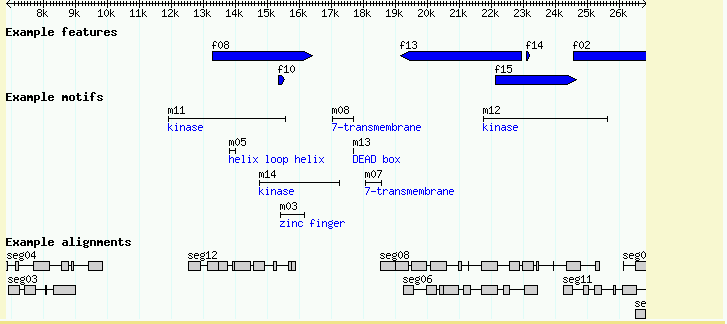
Figure 6: Use the "segments" glyph to display discontinuous multipart features.
GBrowse can display protein-coding genes in various shapes and styles. The easiest way to set this up is to use the sequence ontology's canonical description of a gene along with the "gene" glyph. Take a look at the file volvox_genes.gff3, which defines a gene named EDEN, and its three spliced forms named EDEN.1, EDEN.2 and EDEN.3. Here is the contents of the file:
ctgA example gene 1050 9000 . + . ID=EDEN;Name=EDEN;Note=protein kinase ctgA example mRNA 1050 9000 . + . ID=EDEN.1;Parent=EDEN;Name=EDEN.1;Index=1 ctgA example five_prime_UTR 1050 1200 . + . Parent=EDEN.1 ctgA example CDS 1201 1500 . + 0 Parent=EDEN.1 ctgA example CDS 3000 3902 . + 0 Parent=EDEN.1 ctgA example CDS 5000 5500 . + 0 Parent=EDEN.1 ctgA example CDS 7000 7608 . + 0 Parent=EDEN.1 ctgA example three_prime_UTR 7609 9000 . + . Parent=EDEN.1 ctgA example mRNA 1050 9000 . + . ID=EDEN.2;Parent=EDEN;Name=EDEN.2;Index=1 ctgA example five_prime_UTR 1050 1200 . + . Parent=EDEN.2 ctgA example CDS 1201 1500 . + 0 Parent=EDEN.2 ctgA example CDS 5000 5500 . + 0 Parent=EDEN.2 ctgA example CDS 7000 7608 . + 0 Parent=EDEN.2 ctgA example three_prime_UTR 7609 9000 . + . Parent=EDEN.2 ctgA example mRNA 1300 9000 . + . ID=EDEN.3;Parent=EDEN;Name=EDEN.3;Index=1 ctgA example five_prime_UTR 1300 1500 . + . Parent=EDEN.3 ctgA example five_prime_UTR 3000 3300 . + . Parent=EDEN.3 ctgA example CDS 3301 3902 . + 0 Parent=EDEN.3 ctgA example CDS 5000 5500 . + 1 Parent=EDEN.3 ctgA example CDS 7000 7600 . + 1 Parent=EDEN.3 ctgA example three_prime_UTR 7601 9000 . + . Parent=EDEN.3
GFF3 uses a three-tiered structure to represent the gene, descending from gene to mRNA to CDS and UTR features. A gene has potentially many mRNAs, and each mRNA has potentially several CDS and UTR features. To describe how the parts fit together, we use ID and Parent features.
We start with a feature of type "gene" with the ID "EDEN". This has three alternative splice forms named EDEN.1, EDEN.2 and EDEN.3. To tell GBrowse that each of these splice forms are part of the same gene, we give each one a Parent attribute of "EDEN" corresponding to the ID of the parent gene. Now consider mRNA EDEN.1. It has a five_prime_UTR feature, a three_prime_UTR feature, and four CDS features. To indicate that the CDS and UTR features belong to the mRNA, we give the mRNA a unique ID of "EDEN.1" and give each of the subfeatures a corresponding parent. This pattern repeats for each of the other two splice forms. Note how the five_prime_UTR of EDEN.3 is split in two parts.
As before, we use "Name" to give the gene and its alternative splice forms a human-readable name, and use Note to provide a description for the gene as a whole (you can add notes to the individual mRNAs but they won't display by default). The Index=1 attribute is a hint to the database to make the mRNAs searchable by name. This lets users find the gene by searching for the mRNA names ("EDEN.1") as well as by the gene name ("EDEN"). However, it is usually unecessary to do this. Also notice that we are using the Phase column for the CDS features to describe how the CDS is translated into protein. See the description of phase in the data file section.
This is the full way to describe genes. Simpler ways are described later in this section.
HINT: If you prefer not to distinguish between 5' and 3' UTRs, you can simply use "UTR" as the type. If you don't know where the UTRs are, just leave them blank. If you'd rather think in terms of exons and introns, then check out so_transcript glyph.
Go ahead and add volvox_genes.gff3 to the database. Then add the following new stanza to the bottom of the file:
[Genes] feature = gene glyph = gene bgcolor = peachpuff label_transcripts = 1 draw_translation = 1 category = Genes label_transcripts = 1 key = Protein-coding genes
The new Genes track associates "gene" features with the "gene" glyph, sets its background color to peachpuff (yes, there really is a color by this name!), turns on the description lines, and sets the human readable track name to "Protein-coding genes." Also, since our track table is starting to get a little crowded, this stanza uses the "category" option to start a separate section in the track table for tracks having to do with genes.
Upon reloading the page, turning on the new "Protein-coding genes" track, and viewing the region around 1..10K, you'll see this:
Figure 7: The canonical gene
The gene glyph has a number of options that you can use to customize its appearance:
| Option Name | Possible values | Description |
|---|---|---|
| thin_utr | 0 (false), 1 (true) | If true, makes UTRs half-height. |
| utr_color | a color name ("gray" by default) | Changes the UTR color. |
| decorate_introns | 0 (false), 1 (true) | If true, puts little arrowheads on the introns to indicate direction of transcription. |
Using these options, we can make the track look like the UCSC Genome Browser (Figure 8).
[Genes] feature = gene glyph = gene height = 9 bgcolor = black utr_color = black thin_utr = 1 decorate_introns = 1 description = 1 label_transcripts= 1 category = Genes key = Protein-coding genes
Figure 8: A UCSC Genome Browser lookalike
If the full three-tiered representation of a gene bugs you, there are simpler alternatives. To represent a typical predicted gene that only has a translated region, you can represent the translation as a single CDS line for a single-exon gene, or a series of linked lines for a spliced gene. data_files/volvox_genes_simple.gff3 shows how to do this:
ctgA predicted CDS 10000 11500 . + 0 Name=Apple1 ctgA predicted CDS 13000 13800 . + 0 ID=cds-Apple2;Name=Apple2 ctgA predicted CDS 15000 15500 . + 1 ID=cds-Apple2;Name=Apple2 ctgA predicted CDS 17000 17200 . + 2 ID=cds-Apple2;Name=Apple2
This creates two linked CDS sets: a single exon predicted called Apple1 and a three-exon gene called Apple2. Note that we use a common ID to tie the three Apple2 exons together.
The corresponding stanza will look like this:
[CDS] feature = CDS:predicted glyph = gene bgcolor = white category = Genes key = Predicted genes
The other thing to notice is that the feature is now qualified as "CDS:predicted". This corresponds to a GFF3 type (column 3) of "CDS", and a GFF3 source (column 2) of "predicted." In all previous examples, we used an unqualified feature name, but in this case we don't want the CDS subfeatures from the three-tier EDEN gene examples to be displayed in the predicted gene track. Therefore we limit the features that are displayed in this track by qualifying the feature type with its source using the syntax shown here.
The result is shown in Figure 9:
Figure 9: Simpler genes using linked CDSs and the transcript glyph
The bottom six lines of volvox_genes_simple.gff3 show how to display a single transcript that has both coding and non-coding regions.
ctgA exonerate mRNA 17400 23000 . + . ID=rna-Apple3;Name=Apple3;Note=Predicted ctgA exonerate UTR 17400 17999 . + . Parent=rna-Apple3 ctgA exonerate CDS 18000 18800 . + 0 Parent=rna-Apple3 ctgA exonerate CDS 19000 19500 . + 1 Parent=rna-Apple3 ctgA exonerate CDS 21000 21200 . + 2 Parent=rna-Apple3 ctgA exonerate UTR 21201 23000 . + . Parent=rna-Apple3
To represent this transcript, we need to create a feature of type mRNA and a unique ID, followed by several UTR and CDS subfeatures all linked to the mRNA via their Parent attribute. In this example we use "UTR" for the UTR features, although the more explicit "five_prime_UTR" and "three_prime_UTR" types will also work. The "so_transcript" (Sequence Ontology transcript) glyph knows how to display these correctly:
[Transcript] feature = mRNA:exonerate glyph = so_transcript description = 1 bgcolor = beige category = Genes key = Exonerate predictions
After making this addition to the configuration file, reload the page and turn on "Exonerate predictions." You will see a display that is similar to the gene track, but treats each transcript as a separate feature.
Continuing with the example from section 2.2, the third exon of EDEN.1 is shared with EDEN.3. But is the reading frame preserved? The "cds" glyph will create a display that will visualize each CDS's reading frame.
To see this work, add the following stanza to the bottom of the configuration file:
[ReadingFrame] feature = mRNA glyph = cds ignore_empty_phase = 1 category = Genes key = Frame usage
When you reload the page and turn this track on, you'll see a "musical staff" representation of the frame usage (Figure 10). From this we can see that the alternative splicing in fact changes the reading frame of the second exon.
The "feature" option tells the glyph to take its data from the mRNA subfeatures of the main gene features. Note that depending on which data adaptor you use, you may need to specify the attribute "Index=1" for each of the mRNA subfeatures in order for the glyph to find them inside the gene object. However, this is usually unnecessary.
Figure 10: The "cds" glyph shows the reading frame using a musical staff notation
In some circumstances you may wish to group features together to create a multipart feature. The gene object is actually just a special case of this. To show you the general case, we'll creature a feature of type "BAC", whose subparts are of type "clone_start" and "clone_end" (possibly corresponding to a BAC clone mapping experiment). Here is the GFF3 representation of this:
ctgA example BAC 1000 20000 . . . ID=b101.2;Name=b101.2;Note=Fingerprinted BAC with end reads ctgA example clone_start 1000 1500 . + . Parent=b101.2 ctgA example clone_end 19500 20000 . - . Parent=b101.2
As you can see, we've created a top-level feature of type "BAC" with two children of type "clone_start" and "clone_end" respectively. The start and end have opposite strands, indicating that they were sequenced off different strands of the BAC. The three features are tied together using the ID and Parent attributes that should be familiar to you from the gene examples.
This data lives in volvox_bacs.gff3. Go ahead and add this into the database now. To visualize this add the appropriate stanza to the bottom of volvox.conf:
[Clones] feature = BAC glyph = segments bgcolor = yellow connector = dashed strand_arrow = 1 description = 1 category = Clones key = Fingerprinted BACs
With this new track turned on, look at ctgA:1..24200. It will show that GBrowse has correctly picked up and rendered the relationship between the whole BAC and its two end reads (Figure 11). We have seen all these display options before with the exception of the "connector" option. This controls the appearance of the connecting line between subparts of a feature and can be one of "none", "solid", "dashed", "hat" or "quill". Try them and see what happens! (Note, you will have to change the strandedness of the BAC parent feature from "." to "+" in order to see anything special happen with the quill connector.)
Figure 11: Displaying a simple multipart feature
GBrowse can plot quantitative data such as alignment scores, confidence scores from gene prediction programs, and microarray intensity data. The data can be displayed either with glyphs that change color to indicate score levels (see the "heterogeneous_segments", "graded_segments" and "redgreen_box" glyphs), or using a general-purpose XY-plot glyph.
Congratulations, Affymetrix has built a tiling array for the volvox genome! There's now a transcriptional profile for volvox, with an intensity reading every 100 bp across all of ctgA. The simulated data for this is in the file volvox_array.gff3, an excerpt of which is shown here:
ctgA affy microarray_oligo 1 100 281 . . Name=Expt1 ctgA affy microarray_oligo 101 200 183 . . Name=Expt1 ctgA affy microarray_oligo 201 300 213 . . Name=Expt1 ctgA affy microarray_oligo 301 400 191 . . Name=Expt1 ctgA affy microarray_oligo 401 500 288 . . Name=Expt1 ctgA affy microarray_oligo 501 600 184 . . Name=Expt1 ...
The file contains 500 features, each of which is exactly 100 bp long. The features are of type "microarray_oligo" and of source "affy." Each one has a score (column 6) between 0 and 1000, where higher scores means more transcriptional activity. This is the first time we've used the score column.
All of the 500 features share the same Name (column 9) of "Expt1". Sharing the same name will allow us to group them together into a single transcriptional profiling experiment. However, we do not give them the same ID for reasons that are explained later. If we had multiple experiments to show, they would be named Expt1, Expt2 and so on.
We would like to generate a line graph that shows the transcriptional profile level across the current region. To do this, we need to group all members of the same experiment together into a single graph, and then to assign the "xyplot" glyph to the data. The following configuration stanza will do this:
[TransChip] feature = microarray_oligo glyph = xyplot graph_type = line fgcolor = black bgcolor = black height = 50 min_score = 0 max_score = 1000 scale = right group_on = display_name category = Quantitative Data key = Transcriptional Profile
The options shown here create a track named TransChip to display the tprofile feature with the xyplot glyph. The "graph_type", "height", "scale", "min_score", and "max_score" options all configure various aspects of the xyplot glyph's appearance.
You can read all about xyplot's options using perldoc Bio::Graphics::Glyph::xyplot
When you reload the page and turn on the Transcriptional Profile track, you should see something like that shown in Figure 12.
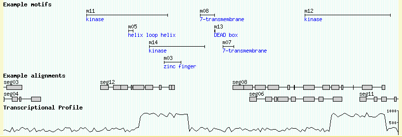
Figure 12: A transcriptional profile rendered with the xyplot glyph
Using the info that perldoc provides, play around with the xyplot options a bit. For example, see what happens when you change graph_type to "boxes."
WIG format is a specialized format for describing quantitative data. It was created by Jim Kent for use in the UCSC genome browser. Details on creating WIG files are described at http://genome.ucsc.edu/goldenPath/help/wiggle.html.
WIG files are plain text files. They always begin with a "track" header, which, at a minimum, looks like this:
track type=wiggle_0 name="ArrayExpt1" description="20 degrees, 2 hr"
The "type" attribute is required, and must have a value of "wiggle_0". "name" and "description" are optional, but suggested, and indicate the name and description of the data series -- these will become the "Name" and "Note" fields of the generated GFF3 feature. Following the track line comes the data for one or more chromosomal regions. As described in the UCSC documentation, there are three ways of formatting the data: (1)"Bed Format", (2) "variableStep", and (3) "fixedStep" format. The first format is essentially the same as GFF3 and does not give you any performance advantages over using straight GFF3. variableStep format describes intervals of the genome that have a fixed width, but begin at arbitrary locations, while fixedStep format describes features of the genome that are evenly spaced and have a fixed width (e.g. tiling array features).
For variableStep data, the format is:
variableStep chrom=chr19 span=150 59304701 10.0 59304901 12.5 59305401 15.0 59305601 17.5 59305901 20.0 59306081 17.5 59306301 15.0 59306691 12.5 59307871 10.0
The data is introduced by a line beginning with the keyword "variableStep", and the arguments "chrom" and "span", which indicate the chromosome on which the features are located, and the width of each feature, in base pairs. This is followed by a series of two-element lines indicating the start position of each feature, and its quantitative value. Values can be any sort of numeric data, including integers, negative numbers and floating point.
For fixedStep data, the format is:
fixedStep chrom=chr19 start=59307401 step=300 span=200 1000 900 800 700 600 500 400 300 200 100
The data is introduced by a line beginning with the keyword "fixedStep", and the arguments "chrom", "span", "start" and "step". The first two arguments are the same as before, while "start" and "step" indicate the starting position of the first feature, and the spacing between each feature. This is followed by a numeric value for each step. In this case, we have described 10 features beginning at position 59307401. Each feature begins 300 bp from the next and is 200 bp wide. In practice, this means that the first 200 bp of each interval is filled with known data, while information on the last 100 bp is "missing."
To see how this works in practice, let us reformat our example microarray data using the fixedStep version of WIG format. The complete data for this is in the file volvox_microarray.wig. It begins like this:
track type=wiggle_0 name="example" description="20 degrees, 2 hr" fixedStep chrom=ctgA start=1 step=100 span=100 281 183 213 191 288 ...
Compare this to the microarray data in Showing Quantitative Data (basic), and you will see that the five entries in the WIG file correspond to the first five features in the GFF3 files.
We'll now create the binary file for the data using the wiggle2gff3.pl script. First, copy the volvox_microarray.wig into the volvox database directory and then change directories (cd) into that directory. Also, delete the volvox_array.gff3 file so we don't see the same set of data twice.
We want it to live in the volvox database directory, so we have to specify this path when creating it:
% wiggle2gff3.pl --path=/var/lib/gbrowse2/databases/volvox volvox_microarray.wig \
> volvox_microarray.gff3
After this script runs, it will write out a line of GFF3 data, which we save to volvox_microarray.gff3. This file will look like this:
##gff-version 3 ctgA . microarray_oligo 1 50000 . . . Name=example;Note=20%20degrees%2C%202%20hr;wigfile=/var/lib/gbrowse2/databases/volvox/track001.ctgA.1200440492.wig
This file contains a single feature that spans the region indicated by the WIG file. The feature has the indicated name and description, and has a new attribute "wigfile" that points to the place where the quantitative data within the region can be found. You are free to edit this file to change the source or type, You can also set the source and type in wiggle2gff3.pl by passing it --source and --type options on the command line. If you move the binary wiggle file, please change the value of the "wigfile" attribute to indicate its new location.
One last step is needed to make the data display properly, however. You must set the glyph type to either "wiggle_xyplot" or "wiggle_density." These are the only glyphs that recognize and properly format wiggle-style data. You can also remove the min and max options, since the wiggle binary files store this information internally and it is no longer needed.
In the config file, change the [TransChip] stanza to look like this:
When you reload the page, the quantitative data should display correctly. You might notice a speed improvement; this becomes much more noticeable on large data sets.[TransChip] feature = microarray_oligo glyph = wiggle_xyplot graph_type = boxes height = 50 scale = right description = 1 category = Quantitative Data key = Transcriptional Profile
Now, for some fun, change the [TransChip] section to use the "wiggle_density" glyph. Also set the bgcolor to "blue" and delete the unneeded graph_type and scale options.
[TransChip] feature = microarray_oligo glyph = wiggle_density height = 30 bgcolor = blue description = 1 category = Quantitative Data key = Transcriptional Profile
This is what the modified track will look like:
Figure 13: A transcriptional profile rendered with the wiggle_density glyph
GBrowse can take advantage of DNA sequence data in several ways:
So we've been working with feature coordinates, but no actual DNA sequence has been loaded into the volvox database. We will again rebuild the database, this time loading in a simulated DNA file in fasta format. Download the file volvox.fa, and copy it into the volvox database directory. At this point in the tutorial, when you do a directory listing of the volvox database directory (with "ls" on unix systems, or "dir/w" on Windows systems) it should look like this:
% ls /var/lib/gbrowse2/databases/volvox/ track001.ctgA.1202327456.wig volvox_domains.gff3 volvox_genes.gff3 volvox.fa volvox_remarks.gff3 volvox_matches.gff3 volvox_bacs.gff3 volvox2b.gff3 volvox_genes_simple.gff3 volvox_est.gff3 volvox_microarray.gff3
If you haven't done so already, please be sure that you have made the database directory writeable by the web server user, either by making it world writeable (as described at the beginning of this tutorial), or by changing the directory's group ownership to match the Apache web server's group account (it varies from system to system, but "nobody", "www", "apache" and "www-data" are the most common possibilities). This is all you need to do to load the DNA. To see that the DNA is indeed being loaded, add two new stanzas to the volvox.conf configuration file:
[DNA] glyph = dna global feature = 1 height = 40 do_gc = 1 gc_window = auto fgcolor = red axis_color = blue strand = both category = DNA key = DNA/GC Content [Translation] glyph = translation global feature = 1 height = 40 fgcolor = purple start_codons = 0 stop_codons = 1 translation = 6frame category = DNA key = 6-frame translation
The "DNA" track uses a specialized glyph called "dna". At low magnifications (zoomed way out), this glyph draws a GC content plot. At high magnifications (zoomed way in), this glyph draws the dna. Of the various options given in the example stanza, the most important one is "global feature", which is set to a true value (1). This tells GBrowse that the stanza doesn't correspond to a specific feature type, but should be displayed globally. Other options control whether to draw one or both strands, whether to draw the GC content histogram, the window size to use when smoothing the histogram, and what colors to use.
Similarly, the "Translation" track uses a glyph called "translation", which draws three or six-frame conceptual translations. At low magnifications (zoomed way out), this glyph draws little symbols indicating where start and stop codons are. At high magnifications, the actual amino acid sequence comes into view. Again, the most important option is "global feature", which is set to a true value to tell GBrowse that the track isn't attached to a particular feature type, but is to be generated automatically. Other options control the height of the glyph, whether to draw start and/or stop codon symbols, and whether to generate a 3frame or 6frame translation.
Figures 13a and 13b show the browser at low and high magnification, with both tracks activated. Notice that the coding track (the "cds" glyph) detects that the DNA is available and generates the transcripts' protein translations automatically.
(14A)
(14B)
Figure 14: Viewing DNA/GC content and 6-frame translation. (a) low magnification; (b) high magnification
If you happen to do a listing of the volvox database directory after adding the DNA file, you might notice that a new file named "directory.index" has appeared. This index directory is created automatically by GBrowse in order to speed up access to the .fa file and to reduce memory requirements. If the database directory is not writable by all users, GBrowse will not be able to create this directory, and the display will be somewhat slower whenever a DNA track is turned on.
This section will lead you through creating a plausible EST track, and show you how grouping of 5' and 3' EST reads works.
We'll start with a simple data set containing information on three pairs of EST reads. You'll find this data set in volvox_est.gff3. Here is the first pair described in the data file:
ctgA est EST_match 1050 1500 . + . ID=Match1;Name=agt830.5 ctgA est EST_match 3000 3202 . + . ID=Match1;Name=agt830.5 ctgA est EST_match 5410 5500 . - . ID=Match2;Name=agt830.3 ctgA est EST_match 7000 7503 . - . ID=Match2;Name=agt830.3 ctgA est EST_match 1050 1500 . + . ID=Match3;Name=agt221.5 ctgA est EST_match 5000 5500 . + . ID=Match3;Name=agt221.5 ctgA est EST_match 7000 7300 . + . ID=Match3;Name=agt221.5 ...
What's going on here is the same as the alignments shown in volvox_matches.gff3. There are two EST reads named agt830.5 (the 5' read) and agt830.3 (the 3' read). Each of them matches the ctgA genome in two discontinuous regions because, presumably, they cross a splice site. As in the earlier example, we represent each EST as a single "EST_match" feature that spans several lines. The lines are linked together by sharing the same ID attribute.
There are two other things to notice. One is that the source field (column 2) is "est" and the type (column 3) is "EST_match." Either of these fields can be used to distinguish the EST matches in this file from the generic "match" matches used in the earlier example. The second item of interest is that the strand field (column 7) is + for the 5' EST and - for the 3' EST, indicating that the 3' EST aligned to the reverse complement of ctgA.
Add this file to the volvox database directory, and add the following to the configuration file:
[EST] feature = EST_match:est height = 6 glyph = segments bgcolor = orange category = Genes key = ESTs
This will give a display similar to that shown in Figure 15.
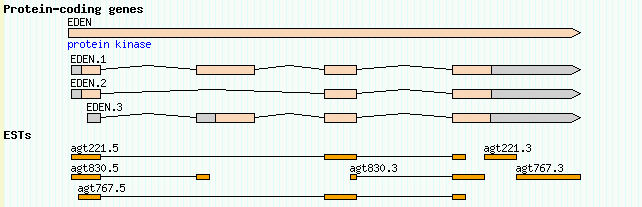
Figure 15: A simple representation of EST matches.
For reasons described earlier, the feature option reads "EST_match:est" rather than simply "match" in order to distinguish the EST matches from the example matches that we loaded previously.
This display is OK, but it could be better. One problem is that the relationship between the 5' and 3' EST read pairs is not shown. We'd like to place the two members of the pair together on the same line, and connect them with a dotted line to show that they are the two ends of the same cDNA clone. An easy way to do this is to add a "group_pattern" option to the [EST] stanza:
[EST] feature = EST_match:est glyph = segments height = 6 bgcolor = orange group_pattern = /\.[53]$/ category = Genes key = ESTs
The new group_pattern option tells GBrowse to use a Perl regular expression pattern matching operation to find and group related EST matches based on their names. It helps to understand how Perl regular expressions work, but basically the pattern match breaks down this way:
/ begin the pattern match \. match a dot [53] match either the numbers 5 or 3 $ match the end of the string / end the pattern match
What this is saying is to look for pairs of EST names that are similar except for the terminal .5 or .3, and pair them. When we reload the page, we get Figure 16.
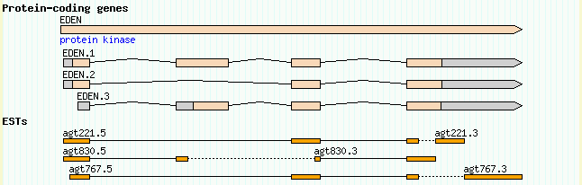
Figure 16: The group_pattern option allows EST pairs to be grouped
Here are regular expressions that will work for other common EST pairing schemes:
| 5' EST | 3' EST | group_pattern |
|---|---|---|
| agt123f | agt123r | /[fr]$/ |
| agt123p | agt123q | /[pq]$/ |
| f.agt123 | r.agt123 | /^[fr]\./ |
| 5.agt123 | 3.agt123 | /^[53]\./ |
| agt123.for | agt123.rev | /\.(for|rev)$/ |
Another nice enhancement would be to give the 5' and 3' ESTs different colors so as to distinguish one from another. This can be accomplished using a Perl callback. Open up volvox.conf once more, and find the bgcolor option in the [EST] track. Replace it with this (you may want to cut and paste from here in order to avoid introducing any typos):
bgcolor = sub {
my $feature = shift;
my $name = $feature->display_name;
if ($name =~ /\.5$/) {
return 'red';
} else {
return 'orange';
}
}
You'll need to know the basics of the Perl programming language in order to do this type of thing yourself. Suffice to say that instead of hard-coding the color "orange" into the bgcolor option, we are asking GBrowse to run a Perl subroutine each time it needs to render an EST. The subroutine is passed the feature that is about to be drawn. It asks the feature for its human-readable name (display_name) and assigns that name to a variable named $name. It then performs a pattern match on the name to see if it ends in a "5". If the name matches, the subroutine returns the color "red" to GBrowse. Otherwise it returns the color "orange."
The effect is shown in Figure 17.
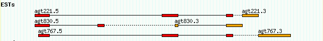
Figure 17: Using a callback to distinguish 5' and 3' ESTs
For your convenience, a configuration file with all the stanzas defined up to this point can be found in volvox_quarter.conf.
The last thing we'll do with the EST data set is to add DNA to the ESTs so that at high magnification GBrowse will show the multiple alignment. This information is also used by the "dump alignments" plugin to generate a text-based multiple alignment.
NOTE: Currently only nucleotide to nucleotide alignments can be displayed at the level of individual nucleotides (e.g. BLASTN, BLAT, Exonerate). Protein to nucleotide alignments, such as those produced by Genewise or BLASTX, are not supported at the residue level
To make this work, we need to add two additional pieces of information to the EST alignment data:
ctgA 1050 gattgccattgaccttggccattggccaagctgaa 1086
|||||||||| ||||||| ||||||||||||||||
agt830.5 1 gattgccattcaccttgggcattggccaagctgaa 135
What we currently have in the GFF file are the source genomic positions of the alignments (in ctgA-relative coordinates). We need to add the target positions in agt830.5-relative coordinates in order for GBrowse to fetch and display the appropriate segments of the EST DNA.
The fasta file ests.fa provides the DNA sequences for the six EST reads. The GFF load file volvox_est_targets.gff3 contains the revised coordinates. If you look at this file you'll see that it is dissimilar to previous load files:
ctgA est EST_match 1050 1500 . + . ID=Match1;Name=agt830.5;Target=agt830.5 1 451 ctgA est EST_match 3000 3202 . + . ID=Match1;Name=agt830.5;Target=agt830.5 452 654 ctgA est EST_match 5410 5500 . - . ID=Match2;Name=agt830.3;Target=agt830.3 505 595 ctgA est EST_match 7000 7503 . - . ID=Match2;Name=agt830.3;Target=agt830.3 1 504 ctgA est EST_match 1050 1500 . + . ID=Match3;Name=agt221.5;Target=agt221.5 1 451 ctgA est EST_match 5000 5500 . + . ID=Match3;Name=agt221.5;Target=agt221.5 452 952 ctgA est EST_match 7000 7300 . + . ID=Match3;Name=agt221.5;Target=agt221.5 953 1253 ...
The first eight columns are identical to what we've been using before, but the ninth column follows a new convention used for nucleotide to nucleotide and protein to nucleotide alignments. There is now a special attribute, "Target", that tells GBrowse specifies the name of the EST sequence (found in a FASTA file), the start position of the alignment in EST coordinates, and the end position of the alignment in EST coordinates. the combination of a target sequence and its coordinates. For example, the first segment of the first alignment, agt830.5, spans positions 1050 to 1500 in genome coordinates, and positions 1-451 in EST sequence coordinates.
There is a subtlety here. Notice that for minus strand ESTs, the target coordinates are not reversed; the start position is always less than the end position. For example, for the first agt830.3 HSP, we are told that genomic region 5410..5500 aligns to EST region 505..596. The strand field is used to determine the direction of the alignment.
Since this data file contains a revised version of volvox7.gff, remove volvox_est.gff3 from the database directory and replace it with volvox_est_targets.gff3 . Also copy ests.fa into the database directory. If you perform a directory listing, it should look like this:
directory.index volvox_remarks.gff3 volvox_domains.gff3 volvox_genes_simple.gff3 volvox_bacs.gff3 volvox_est_targets.gff3 ests.fa volvox_matches.gff3 volvox_genes.gff3 volvox_array.gff3 volvox.fa
NOTE: If you see doubled EST features after this point, make sure that you have removed volvox7.gff. Another thing to watch out for is that some sort of bug in the BioPerl layer (up through at least version 1.4) causes the EST DNA display to get messed up at this point on Windows systems. To fix the latter problem, go to the volvox database directory and remove the files directory.dir and directory.pag. These are automatically-generated DNA file indexes that GBrowse develops, and will be regenerated for you the next time you access a page.
We're not done with making configuration file changes, but volvox_halfway.conf contains all configuration file enhancements up to this point. If you like, you can copy it over the live volvox.conf. It contains the following version of the [EST] track:
[EST]
feature = EST_match:est
glyph = segments
height = 6
draw_target = 1
show_mismatch = 1
canonical_strand = 1
label_position = left
bgcolor = sub {
my $feature = shift;
my $name = $feature->display_name;
if ($name =~ /\.5$/) {
return 'red';
} else {
return 'orange';
}
}
group_pattern = /\.[53]$/
key = ESTs
The key addition to this track configuration is the "draw_target", "show_mismatch" and "canonical_strand" options. All options are true/false flags, where 0 means false and 1 means true. draw_target tells the segments glyph to draw the DNA sequence of the target ESTs when the magnification allows. show_mismatch instructs the glyph to highlight mismatches between the genome and the EST in pink. canonical_strand instructs the glyph to display the plus strand sequence even when the EST matches the minus strand. We've also added a "label_position" option that tells GBrowse to draw each EST's label to its left. This allows the multiple alignments to pile up nicely.
To see this work, reload the page, turn on the EST track and search for region "ctgA:1065..1165". This will show the aligned 5' ends of agt221.5, agt830.5 and agt767.5 (Figure 18). Notice that one of the T's towards the beginning of agt830.5 is highlighted to show that it doesn't match the corresponding genomic base.
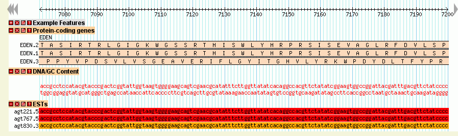
Figure 18: Multiple alignments at the DNA level
If you don't see the EST sequence appearing, make sure that ests.fa is in the volvox database directory and is world readable. If it still isn't working, you may need to "touch" the file in order to update its modification date. This tells GBrowse that it is new and needs to be reindexed. In Unix:
% touch /var/lib/gbrowse2/databases/volvox/ests.fa
If you are still having problems, remove the directory.index file completely in order to force reindexing.
If you have sequence trace information (in SCF format) associated with the reference sequence, this can be displayed in gbrowse using the trace glyph. To use this glyph, you must have installed:
The data file volvox_trace.gff3 contains an example trace entry.
ctgA example read 44401 45925 . + . Name=trace;trace=volvox_trace.scf
This aligns the full trace sequence to the reference sequence. The trace file in this case is named "volvox_trace.scf", and it is located in /var/www/gbrowse2/tutorial/data_files/volvox_trace.scf.
Due to sequence quality, the first few bases of a trace file usually don't align. Even so, these need bases need to be included in the gff file. For instance, if the bases 10-700 of the trace file aligns to the bases 100-800 of the reference sequence, the feature would be 90-800 to account for the first 10 bases (starting at base 0).
NOTE: The trace glyph currently doesn't deal with insertions or deletions. If an indel occurs, the alignment after the indel will be off.
Copy this file into the volvox database directory. Then, to display the trace, copy the following into the volvox.conf (or copy volvox5.conf over the current volvox.conf file).
[Traces] feature = read glyph = trace fgcolor = black bgcolor = orange strand_arrow = 1 height = 6 description = 1 a_color = green c_color = blue g_color = black t_color = red show_border = 1 trace_height = 80 trace_prefix = http://localhost/gbrowse2/tutorial/data_files/ key = Traces
The fgcolor, bgcolor, strand_arrow and height control the bar that shows the location and directionality of the trace.
The trace_prefix option is important because it gives the path to the trace files. This is prepended to the trace file name defined in the gff file. It can be a direct path to the directory (eg "/usr/local/trace_files/") or a web address (as above).
The a/c/g/t_color options allow configuration of the base colors. The trace_height refers to the height of the trace itself. Play around with it to find a height that you like.
If show_border is set to 1, a black box will be drawn around the trace.
After configuring the trace glyph, reload the browser page and enable traces. Zoomed out you will see:
Figure 19: The trace glyph zoomed out.
Zooming in will show you the trace diagram:
Figure 19: The trace glyph zoomed in.
GBrowse allows you to load up next generation sequencing data such as produced by the Illumina and SOLiD platforms. See the SAM or BAM format (see the GBrowse NGS Tutorial for instructions on how to do this.
In this section of the tutorial we'll discuss customizing the look and feel of GBrowse by adding a region view section, adding feature tracks to the region view and/or overview sections, configuring semantic zooming, and adding functionality with plugins.
The region panel is the intermediate-sized view that appears between the overview and the detailed views. You can adjust its behavior by changing the following options in either the main GBrowse.conf config file, or one of the data source configs:
default region = 5000 region sizes = 1000 5000 10000 20000 region segment = 200000
The "default region" is the length (in bp) of the region shown when the user first loads GBrowse. "region sizes" is a space-delimited list of lengths that the user can select in his or her preferences. "region segment" is the largest size that the region can be set to.
To disable the region display entirely, put the following into the [GENERAL] section of the main config file or the data source config file:
region section = hide
You can do the same thing with the overview "overview section=hide" but it is unclear why you'd want to.
In many cases it is handy to add tracks directly to the overview and/or region panel. These tracks can be turned on and off just like normal tracks, and can serve as reference points for well-known genes, cytogenetic bands, or genetic markers.
We will illustrate how to do this by placing a copy of the Motifs track into the overview. Add the following to the bottom of the volvox.conf configuration file:
[Motifs:overview] feature = polypeptide_domain glyph = span height = 5 description = 0 label = 1 key = Motifs
This stanza is identical to the [Motifs] track that we created earlier, except that its name is qualified with ":overview". This tells GBrowse that this is not an ordinary track to be placed in the detail image, but one that should be placed in the overview.
We also want the overview motifs track to be displayed by default, so go to the top of the configuration file, and modify the "default features" option to look like this:
# list of tracks to turn on by default default features = ExampleFeatures Motifs:overview
Reload the page. Violá! See Figure 22.
Figure 20: Any number of tracks can be placed in the overview or region
You can add as many tracks to the overview as you like. The main warning is that if you add lots of features to the overview it can get pretty crowded in there. Performance can also suffer, since each feature must be fetched and rendered each time the overview is displayed.
To add a track to the region panel, simply replace ":overview" with ":region" in the track stanza:
[Motifs:region] feature = polypeptide_domain glyph = span height = 5 description = 0 label = 1 key = Motifs
One of the cooler features of GBrowse is its ability to support semantic zooming. Semantic zooming is a feature in which objects show different levels of detail depending on the level of magnification. We've already seen this behavior in the "dna" and "segments" glyphs, which show the DNA sequence only when there's sufficient room to display it.
GBrowse has several types of semantic zooming:
The thresholds for labeling and bumping are set by configuration options named "label density" and "bump density" respectively. The standard values can be found in the defaults track named [TRACK DEFAULTS]. They are originally set so that labels are suppressed when there are more than 25 features per track, and bumping is suppressed when there are more than 100 features per track. You can these values globally by editing their values in [TRACK DEFAULTS], or you can add "label density" and/or "bump density" options to individual track configuration sections in order to override the settings for specific tracks.
The process of setting up semantic options is a bit more interesting. To illustrate, we will create semantic zooming for the [Alignments] track ("Example Alignments"). We would like the track to shift from showing the individual segments to showing solid rectangles when the user is zoomed out to 30K and beyond, and turn bumping off when the user is zoomed out to 45K and beyond. The process is simple. Beneath the [Alignments] stanza, we add a stanza qualified for zoomlevels of >= 30,000 and another stanza qualified for zoomlevels of >= 45,000:
[Alignments] feature = match glyph = segments key = Example alignments [Alignments:30000] glyph = box label = 0 [Alignments:45000] glyph = box bump = 0 label = 0
The format for semantic options is [Trackname:distance], where Trackname must be the same as the non-qualified track, and distance is the length of the region at which the semantic options will kick in. Only options that are different from the non-qualified track need to be listed. According to the configuration given above, when the user is looking at a region 30,000 bp or longer, the glyph option will change to "box," which is a solid rectangle that doesn't show any internal details. All other options, such as feature and key, will be inherited from the [Alignments] track.
At 45,000 bp, the glyph is again set to box, and in addition the "bump" option is set to zero, turning off collision control. Notice that options are inherited from the unqualified track stanza, and not from the previous semantic zoom level. If we had neglected to specify the glyph option in [Alignments:45000], the glyph would have reverted to "segments."
Make these changes to volvox.conf, turn on the "Example Alignments" track, and view the contig at 20K, 40K and 50K. At 40K, you'll see the alignments lose their internal structure and be replaced by solid boxes (Figure 21). At 50K they'll begin to overlap and the feature labels will be suppressed.
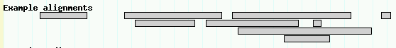
Figure 21: Semantically zoomed alignments at 40K
The bottom of the GBrowse window contains an expandable set of checkboxes that allows the users to turn tracks on and off. By default, the tracks are grouped into sections corresponding to tracks belonging to the overview panel, those belonging to the region panel, tracks created by external (third-party) annotations, and tracks created by plugins. By default, all other tracks are grouped together in a catch-all section named "General."
As we have seen, you can easily define new track groups to make navigation easier by adding a "category" option to each of the track stanzas. This option defines the name of the category. You can extend this into subcategories and sub-subcategories by separating category names with a ":" character. For example:
[Motifs] feature = polypeptide_domain glyph = span height = 5 description = 1 category = Genes:Translation key = Example motifs [Translation] glyph = translation global feature = 1 height = 40 fgcolor = purple start_codons = 0 stop_codons = 1 category = Genes:Translation translation = 6frame key = 6-frame translation [Genes] feature = gene glyph = gene bgcolor = peachpuff label_transcripts = 1 draw_translation = 1 label_transcripts = 1 category = Genes:Structure key = Protein-coding genes [CDS] feature = CDS:predicted glyph = gene bgcolor = white category = Genes:Structure key = Predicted genes
In this way we can create sections named "Alignments," "Examples," "Genes" and "Proteins" and assign the appropriate tracks to them. The Tracks control section will look something like Figure 22:
Figure 22: You can group tracks into categories, subcategories and sub-subcategories to an arbitrarily level.
A further refinement to display track information within the category is a table display with headings for the rows and columns (see Figure 23 for an example). This layout is useful for displaying data that highlights the experimental design as in microarray or ChIP-on-Chip experiments.
Figure 23: An example of a category table containing a 9 track table, organized as 3 rows x 3 columns each with a heading.
This was constructed by adding an option named "category tables" to the [GENERAL] section. The first argument in this option refers to the category you wish to add the table to, the second is a space separated list of column headings, the third a space separated list of row headings.
It is then important that your stanzas within the category are in column followed by row order (see example below and compare with Figure 25). So stanza 1 is column 1/row 1, stanza 2 is column 1/row 2, stanza 3 is column 1/row 3, stanza 4 is column 2/row 1, stanza 5 is column 2/row 2 etc. This means each cell in the table must have a stanza. Any surplus tracks within that category will be ignored. For example if there was a stanza 10, this would not be shown. If there are empty tracks they can be disabled using the 'disabled = 1' option in the stanza. So to display the category table in figure 27 you would use the following configuration.# category table configuration category tables = 'ArrayExpts' 'strain-A strain-B strain-C' 'temperature anaerobic aerobic'
[temp_strainA] category = ArrayExpts feature = temp_strainA_agg glyph = xyplot bgcolor = red neg_color = green fgcolor = black graph_type = boxes height = 80 min_score = -2.0 max_score = 2.0 scale = both key = Temp strain A (1 expt) [anaerobic_strainA] category = ArrayExpts feature = anaerobic_strainA_agg glyph = xyplot bgcolor = red neg_color = green fgcolor = black graph_type = boxes height = 80 min_score = -2.0 max_score = 2.0 scale = both key = Anaerobic Strain A (0 expt) disabled = 1 [aerobic_strainA] category = ArrayExpts feature = aerobic_strainA_agg glyph = xyplot bgcolor = red neg_color = green fgcolor = black graph_type = boxes height = 80 min_score = -2.0 max_score = 2.0 scale = both key = Aerobic Strain A (0 expt) disabled = 1 [temp_strainB] category = ArrayExpts feature = temp_strainB_agg glyph = xyplot bgcolor = red neg_color = green fgcolor = black graph_type = boxes height = 80 min_score = -2.0 max_score = 2.0 scale = both key = Temp strain B (2 expts) [anaerobic_strainB] category = ArrayExpts feature = anaerobic_strainB_agg glyph = xyplot bgcolor = red neg_color = green fgcolor = black graph_type = boxes height = 80 min_score = -2.0 max_score = 2.0 scale = both key = Anaerobic Strain B (0 expt) disabled = 1 [aerobic_strainB] category = ArrayExpts feature = aerobic_strainB_agg glyph = xyplot bgcolor = red neg_color = green fgcolor = black graph_type = boxes height = 80 min_score = -2.0 max_score = 2.0 scale = both title = blah key = Aerobic strain B (3 expts) [temp_strainC] category = ArrayExpts feature = temp_strainC_agg glyph = xyplot bgcolor = red neg_color = green fgcolor = black graph_type = boxes height = 80 min_score = -2.0 max_score = 2.0 scale = both key = Temp strain C (1 expt) [anaerobic_strainC] category = ArrayExpts feature = anaerobic_strainC_agg glyph = xyplot bgcolor = red neg_color = green fgcolor = black graph_type = boxes height = 80 min_score = -2.0 max_score = 2.0 scale = both key = Anaerobic strain C (3 expts) [aerobic_strainC] category = ArrayExpts feature = aerobic_strainC_agg glyph = xyplot bgcolor = red neg_color = green fgcolor = black graph_type = boxes height = 80 min_score = -2.0 max_score = 2.0 scale = both key = Aerobic strain C 3 (2 expts)
If you need to have multiple category tables, simply use continuation lines for the "category tables" option:
# category table configuration
category tables = 'ArrayExpts' 'strain-A strain-B strain-C' 'temperature anaerobic aerobic'
'CHiP-Chip' 'TFX1 ONE-CUT PHA4' '16-cell-stage 320-cell-stage adult'
Another cool GBrowse feature is its ability to take advantage of plugins, which are small modules of Perl code that extend GBrowse in various ways. In this section, we will show how to activate two popular plugins, RestrictionAnnotator and Aligner. The first generates a track of restriction sites. The second dumps a text-based multiple alignment of the current region on view.
To see these plugins at work, first make sure that the database files are up to date with this position in the tutorial. If you are in any doubt, remove the current contents of the volvox database directory and replace them with the files volvox_all.gff3 and volvox_all.fa.
Now find the option "plugins=" at the top of volvox.conf, and modify it to activate the Aligner and RestrictionAnnotator plugins (the TrackDumper plugin is already turned on):
plugins = TrackDumper Aligner RestrictionAnnotator
When you reload the page, you will see a new popup menu appear under the image labeled "Dumps, searches and other operations." You will also see an automatic track labeled "plugin:Restriction Sites" appear in the track list. When you turn on this track, you will be presented with a restriction map (Figure 26). You can then adjust which restriction sites are shown by selecting "Annotate Restriction Sites" from the popup menu and pressing the "Configure" button.
Figure 26: The RestrictionAnnotator Plugin
To see the Aligner at work, center your view on a region that contains the EST alignments (for example, ctgA:1000..5000), select "Dump Alignments" from the plugin popup menu, and press "Go". This will return a text-based multiple alignment of the genome and the EST tracks.
The Aligner plugin has some additional configuration that you can perform. We'll look at this now as an example of how to configure plugins. Open up volvox.conf and add the following configuration section:
######################## # Plugin configuration ######################## [Aligner:plugin] alignable_tracks = EST upcase_tracks = CDS Motifs upcase_default = CDS
It doesn't matter where the section goes, but it is probably a good idea to place this towards the middle of the file after the [GENERAL] section (at the top) and before the [TRACK DEFAULTS] section. Otherwise it is easy for you or someone else maintaining the configuration file to mistake this for some sort of track configuration.
Plugin configuration sections are distinguished from track configuration by having names of the format PluginName:plugin. In this case, the three configuration options are applied to the Aligner plugin. For the Aligner plugin, the configuration options are:
| Option | Description |
|---|---|
| alignable_tracks | Space-delimited list of tracks to include in the multiple alignment. The genome is always included. If this option is not present, then GBrowse will automatically include any track that has the "draw_target" option set. |
| upcase_tracks | Space-delimited list of tracks that will be used to UPCASE the genomic DNA. This is very useful if you want to embed the positions of coding regions or other features inside the multiple alignment. Uppercasing will not be turned on by default. The user must press the "Configure" button, and select which of the uppercase tracks are to be activated from a list of checkboxes. |
| upcase_default | A space-delimited list of tracks that will be uppercased by default unless the user turns them off during configuration. |
| ragged_default | A small integer indicating that the aligner should include some unaligned bases from the end of each sequence. This is useful for seeing the sequencing primer or cloning site in ESTs. |
With the changes in place, select the aligner from the popup menu and press Configure. Turn on uppercasing of the coding region track and see how it affects the display (Figure 27).
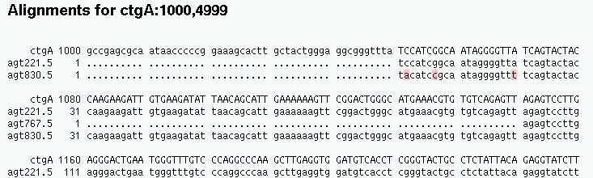
Figure 27: The Aligner plugin produces multiple alignments.
Plugin files live in /etc/gbrowse2/plugins. To view plugin documentation, find the plugin file, which usually lives under gbrowse.conf/plugins, and run the perldoc command with the -F ("file") option:
% perldoc -F Aligner.pm
Here's the list of plugins that come with the standard distribution:
| Plugin | Description |
|---|---|
| Aligner | Dump multiple alignments |
| AlignTwoSequences | Execute NCBI's bl2seq on the current view (requires the bl2seq executable). |
| AttributeHiliter | Highlight (by colorizing) features whose attributes match some user-specified values. |
| BatchDumper | Allows the user to cut and paste a series of landmarks on the genome and dumps out all overlapping features using a variety of formats (e.g. GenBank format) |
| Blat | Plugin to align sequences against the genome using the BLAT algorithm (requires BLAT executable). |
| CMapDumper | Produces files that can be read by the CMap comparative map browser. |
| CreateBlastDB | Creates a Blast-formatted database from a GBrowse database. |
| FastaDumper | Produce pretty-printed FASTA dumps of the current region, with selected features highlighted with colors or font styles. |
| FilterTest | Small demonstration of how to write a plugin that filters features (makes them visible or invisible) based on arbitrary criteria. |
| GeneFinder | Runs Phil Green's genefinder gene prediction program within GBrowse (requires genefinder executable). |
| GFFDumper | Dump out the current region in GFF format (redundant with BatchDumper). |
| OligoFinder | Lets the user search for landmarks on the basis of unique 11-mers or greater. |
| PrimerDesigner | Interactively design PCR primers (requires primer3 executable). |
| ProteinDumper | Dump translated protein sequences of the current region in various formats |
| RandomGene | Small demonstration of how to connect a plugin to a gene prediction program. Doesn't actually predict genes, but generates simulated ones. |
| RestrictionAnnotator | Creates restriction maps. |
| Spectrogram | Generate DNA spectrograms to highlight low complexity regions, repetitive regions, coding regions and other regions with periodicity. Requires Math::FFT Perl module. |
| Submitter | Helper plugin for the rubber-band select menu. See GBrowse Rubber-band selection. |
| test | This dumps the current view in FASTA format, and is used for regression testing the plugin architecture. |
It is often useful to have independent annotation data sets that can be visualized together but updated separately. For example, you may be working on a genome that has a core set of stable annotations that everyone shares, such as the set of protein-coding genes, and independent sets of annotations that change frequently, such as promoter predictions and experimental data.
GBrowse provides several mechanisms for making this type of modular annotation possible. You can:
This section will lead you through the various ways to view third party annotations on top of GBrowse. The examples are somewhat contrived since we only have one computer to work with, and by necessity both the main data and the third-party feature data will have to reside on the same computer. Don't be confused by this, and keep in mind that in the real world, GBrowse will be running on one computer, and the third-party annotation data will be loaded from another network-accessible computer.
First, we'll look at how to upload private tracks to the browser. This method is intended for users who wish to view their own data in the context of the genome.
Instead of using the artificial volvox data, we will now use some real genome annotations from the C. elegans genome project. This is a region around C. elegans cosmid C01F4. The core data that we'll be using is contained in the files elegans_core.gff3, and elegans.fa.
Refer back to the beginning of the tutorial now and create a GBrowse database directory named "elegans_core". Copy elegans_core.gff3, and elegans.fa into it. Remember to make this directory writable by the web server user!
Copy the data source configuration file elegans_core.conf into /etc/gbrowse2/, and create a suitable stanza in GBrowse.conf to describe this new data source:
[elegans_core] description = Core C. elegans annotations path = elegans_core.conf
Confirm that you can browse the database. Figure 28 is a picture of the entire data set with all core tracks turned on.
Figure 28: The core C. elegans dataset.
We will now add some third-party annotations to the display. These are contained in the files "elegans_acceptor.gff3", "elegans_expression.gff3", "elefans_sts.gff3", "elegans_deletion.gff3", and "elegans_repeats.gff3":
| elegans_acceptor.gff3 | Annotations of C. elegans spliced leader acceptor sites. |
| elegans_expression.gff3 | Positions assayed for gene expression level in C. elegans microarrays. |
| elegans_sts.gff3 | Primer pairs available for the region produced by the C. elegans ORFeome project. |
| elegans_deletion.gff3 | Deletion endpoints from a targeted gene knockout project. |
| elegans_repeats.gff3 | Complex repetitive elements found using the RepeatMasker program. |
We can load each of these files to private storage located on the server using the file upload feature. Copy these five files to your home directory where you can find them easily. Go to the tab named Upload and Share Tracks and choose the link marked "Add custom track(s) [From a file]". When the upload button appears, press it, select one of the annotation files, and then press the "Upload" button to upload the file to the server. The annotations contained in the file should now appear on the display. If you now do this for all five of the annotation files, you will eventually get a display like that shown in Figure 29.
Figure 29: After uploading five annotation files.
NOTE: This upload function works even if the gbrowse you are uploading to is located on a remote server. The uploaded files are stored in a private directory on the server away from the main data set. Other users cannot see your data, unless you explicitly share the track as described later.
Although this display is functional, the tracks are fairly uniform in appearance. Fortunately, we can customize the uploaded files quite easily. One way is to use the graphical configuration editor. Find the "deletion:Allele" project track and click on the "?" next to its name. This will bring up a graphical settings block as shown in Figure 30. Change the glyph to "triangle" and the fill and line colors to "red". When you press the "Change" button the track will be updated with the desired settings.
This customization only takes place for the current user. If you share this track with someone else, he will only see the original, default, appearance of the track.
Figure 30:You can change the appearance of a custom track by clicking on the "?" next to the track.
Let us change the "elegans_sts.gff3" file so that the primer pairs use the "primers" glyph. Go back to the "Upoad and Share Tracks" tab, scroll down to the file named "elegans_sts.gff3" and click the "[edit]" link next to the line labeled "Configuration" (Figure 31). You will see a now-familiar GBrowse configuration stanza.
Now edit the configuration stanza to change the glyph to "primers" and the key to "PCR primers generated by the Orfeome project:"
Figure 31:You can configure a track in-place using the built-in configuration editor.
Now click "Submit." After a few moments, the track will reconfigure and the changes will be permanent. If you mess up the config file, you can either reload the file from scratch, or click the "[edit]" link next to the uploaded file name itself. This will bring up a similar in-place editor with the original file's contents. When you click "Submit" the automatic configuration file will be regenerated.[reagent_1] feature = reagent:Orfeome_project glyph = primers bgcolor = yellow fgcolor = black label = 1 connector = solid balloon hover = $description category = My Tracks:Uploaded Tracks:elegans_sts.gff3 key = PCR primers generated by the Orfeome Project
Hint: You can also place configuration stanza(s) at the top of the uploaded file. GBrowse will use them instead of generating its own.
When you are done, press "Submit Changes..." and the display will be updated to show the track with a more readable track name and the primers glyph. If you like, you can customize each of the files. Here is a suggested set of customizations:
# for the file elegans_repeats.gff3 [Repeats] feature = repeat bgcolor = white key = Complex repeats # for the file elegans_acceptor.gff3 [Acceptors] feature = trans-splice_acceptor_site glyph = diamond bgcolor = red key = Trans-splice Acceptors # for the file elegans_deletion.gff3 [Deletions] feature=deletion glyph = span key = Gene knockouts # for the file elegans_expression.gff3 [Expression] feature = microarray_oligo bgcolor = orange height = 4 key = Microarray expression probe
Note: For security reasons Perl subroutines are not allowed in the configuration sections of uploaded files. However links and link patterns are allowed.
There is no particular reason that each of the annotation sets were broken into separate files. We could easily combine them into a single GFF file just as you do for the core annotations.
Once you have an uploaded annotation file set up the way you like, you
might want to share it with others. This is easily done by going to
the main GBrowse tab, finding the track you want to share, and
clicking on the icon that looks like an RSS feed ( ). This will pop up a balloon
containing a URL. Cut and paste this URL into an email message. When
the recipient clicks on it, he will be taken to GBrowse with your
track displayed. You can do this for several tracks.
). This will pop up a balloon
containing a URL. Cut and paste this URL into an email message. When
the recipient clicks on it, he will be taken to GBrowse with your
track displayed. You can do this for several tracks.
Another way to load a file into GBrowse is to put a copy of it on a local web or FTP server and then import it by URL. This requires that you have access to a web or FTP server, but if you are working with GBrowse, then we can assume you do!
To watch this in action, we will place one of the annotation files onto the local web server and then load it from within the local GBrowse. This contrived example doesn't make much sense until you realize that the same trick will work when the GBrowse server and the web-accessible annotation file can be on separate machines halfway across the world.
We will demonstrate using a new version of the elegans_sts.gff3 file. Create a file named "test_annotations.gff3" in the directory "/var/www/gbrowse2". This will place it at the top of the Web server document tree, but outside the location of GBrowse databases. This file should contain these lines:
NOTE: The fields must be separated by tabs, not spaces.[Orfeome Primers] feature = reagent glyph = primers height = 6 key = ORFeome project primer pairs ##gff-version 3 C01F4 Orfeome_project reagent 3319 17668 . + . Name=mv_ZK783.1;amplified=0 C01F4 Orfeome_project reagent 18584 20445 . - . Name=mv_G_YK5686;amplified=1 C01F4 Orfeome_project reagent 24509 25425 . - . Name=mv_ZK783.3;amplified=1 C01F4 Orfeome_project reagent 26525 33359 . - . Name=mv_ZK783.4;amplified=0 C01F4 Orfeome_project reagent 38660 49506 . + . Name=mv_C18H2.1;amplified=1
Confirm that the file is correctly installed by fetching the URL "http://your.web.server/gbrowse2/test_annotations.gff3".
Now go back to your browser, open the "Upload and Share Tracks" tab, and click on "[Import a track]" at the bottom of the page. This will open up a text field. Type in the URL you used above and click "Upload." The contents of the file will now be visible as a new "ORFeome project primer pairs" track on the browser. The neat thing about this is that whenever you change the file on the web server, the track changes as well.
You can use this feature to share custom tracks without uploading your data to the browser. Simply send the URL of the file to your colleagues, and instruct them to import them into GBrowse in the way you just did yourself.
Till now, we've been using the Bio::DB::SeqFeature::Store in-memory adaptor. This adaptor is suitable for small databases, but does not scale well to realistically-sized genomes. This section will show you how to create large genome annotation databases using the Berkeleydb and Mysql adaptors. For a full-featured genome database that includes annotations of gene structure and function, as well as genetic maps, diversity information and phenotypic information, be sure to check out the Chado database which is significantly more feature-rich than those described here.
The in-memory database is great for smaller data sets, and can handle GFF files of up to about 20,000 features (more if you have lots of memory). For larger data sets, however, you'll want to use a database management system. GBrowse handles a number of DBMS through its "database adaptor" system. This section shows how to use the Bio::DB::GFF berkeleydb adaptor that comes for free when you install BioPerl; this will enable you to create databases of 10 million or more features. The next section shows you how to install a MySQL relational database that will support even larger data sets. You may skip these sections and move on to working with third-party annotations if you do not wish to install a berkeleydb-based server at this time.
The Berkeleydb database adaptor comes with BioPerl 1.51 or higher (still under development at the time this tutorial was written). If you have an older version of BioPerl, GBrowse will install the adaptor for you. As its name implies, this adaptor uses the Berkeleydb database system (http://www.sleepycat.com) to create indexed database files from GFF feature files. The adaptor also requires the Perl DB_File interface to Berkeleydb. If you are using a Linux or Mac OSX system, you almost certainly have both Berkeleydb and DB_File already installed. For Windows users of ActiveState Perl, you should confirm that DB_File is installed by running the following command:
C:\> perl -MDB_File -e 'print $DB_File::VERSION'
If this prints out a number, then you are golden. If you get an error, you should reinstall DB_File by running the PPM tool:
C:\> ppm PPM interactive shell (2.1) - type 'help' for available commands. PPM> install DB_File
It is an extremely simple task to convert an existing in-memory database to use the Berkeleydb database. We will now convert the Volvox example database to Berkeleydb.
Take the most recent version of the volvox.conf configuration file, and edit the top few lines of the new file so that it looks like this:
[GENERAL] description = Volvox Berkeleydb Database db_adaptor = Bio::DB::SeqFeature::Store db_args = -adaptor berkeleydb -dir '/var/lib/gbrowse2/databases/volvox'
We made just two changes. First, we changed the description of the database to "Volvox Berkeleydb Database" to distinguish it from the in-memory database. Second, we changed the value of the -adaptor option from "memory" to "berkeleydb".
Now reload the volvox page in your browser. There will be a slight delay as the Berkeleydb adaptor constructs its indexes, and then the page will reappear. You should now be able to browse and search the database exactly as before. Depending on how fast the memory adaptor was to begin with, you may not notice a speed improvement; however, with large GFF files, the performance improvement will be very marked.
If you look in the volvox database directory, you will see a new subdirectory named "index". This contains a set of index files that allow gbrowse to find features quickly. They are automatically created and updated as needed when the underlying GFF or FASTA files are changed.
If you get an "Internal Server Error" or similar message, check the server error log file for messages that explain what went wrong. The most common problem is that the volvox database directory is not writeable by the web server user. As described earlier, this directory must be "world writeable" in order to allow the web server to create and maintain the databases
Although it is convenient to maintain the Berkeleydb indexes automatically, this mechanism has a number of disadvantages. One disadvantage is that this mechanism requires the database directory to be world writeable (or at least writeable by the web user), which may not be acceptable in some installations. Another disadvantage is that the indexing may take a long time, up to 10 minutes for a GFF databases containing a million lines. Some web servers will time out during this process. For large databases, it is better to explicitly create the database index files using the bp_seqfeature_load.pl program.
bp_seqfeature_load.pl is a BioPerl utility that is described in more detail in The MySQL Backend. It takes as its input a series of GFF and FASTA files and creates the appropriate database files. To see how to use it, we will create a fresh database directory. Go to the GBrowse database located at /var/lib/gbrowse2/databases and create a new subdirectory called "volvox_bdb:"
% cd /var/lib/gbrowse2/databases % mkdir volvox_berkeley
On Windows systems you can use the file manager to create this new folder.
You do not have to make this directory world writeable, but it should be readable and executable by the user that the web server runs as. Now enter the tutorial data files directory (/var/www/gbrowse2/tutorial/data_files) and load the GFF and sequence files using the following command:
% bp_seqfeature_load.pl -c -a berkeleydb -f -d /var/lib/gbrowse2/databases/volvox_berkeley volvox_all.fa volvox_all.gff3
loading volvox_all.fa...
Building object tree... 0.00s
Loading bulk data into database... 0.01s
load time: 0.02s
loading volvox_all.gff3...
Building object tree... 0.00s
Loading bulk data into database... 0.00s
load time: 0.08s
| -a | Use the berkeleydb database adaptor. |
| -c | clear (initialize) the database |
| -f | use the fast loading option |
| -d /var/lib/gbrowse2/databases/volvox_berkeley | Load the data into the indicated database directory. |
| volvox_all.fa volvox_all.gff3 | The data files to load. |
If all goes well, this will create the index files in /var/lib/gbrowse2/databases/volvox_bdb. If you look in that directory now, you'll see a series of index files.
The last step is to modify the volvox.conf to point to this directory. Open it in a text editor and modify the top part so that it looks like this:
[GENERAL] description = Volvox Berkeleydb Database db_adaptor = Bio::DB::SeqFeature::Store db_args = -adaptor berkeleydb -dsn '/var/lib/gbrowse2/databases/volvox_berkeley'
The change here is to replace the -dir argument with -dsn ("data source name"). This tells the Berkeleydb adaptor that pre-made index files can be found in the indicated directory. It will not attempt to update the index files automatically.
If you wish to update the indexes with new GFF or sequence data, you should run the bp_load_gff.pl script again to update the indexes. Using the -c flag will reinitialize the indexes from scratch, erasing whatever was there before. Without this flag, the provided GFF and/or sequence data will be incrementally added to the indexes.
The Bio::SeqFeature::Store SQLite adaptor is an interface to the open source SQLite database management system. Its performance is significantly better than that of the Berkeleydb adaptor, and is highly recommended for production environments. This section describes how to set up GBrowse to use this adaptor.
First you'll need to confirm that SQLite is installed. It is installed by default on most Linux systems and Macintosh OSX, but will not be present on Windows. Go to The SQLite Home Page and download and install the source code or binary package that is most suitable to you.
Next, you'll need to install the Perl interface to SQLite. Again, this is preinstalled on many systems, but if you need to install it, you can get it via the CPAN installer (Linux, OSX), or PPM (Windows).
Via CPAN:
Via PPM:% perl -MCPAN -e shell cpan> install DBD::SQLite cpan> quit
Users of Debian systems can simply install the package libdbd-sqlite3-perl.C:\Windows> ppm ppm> install DBD::SQLite ppm> quit
You'll now load the .gff3 and .fa files into a new SQLite database. There are actually two steps needed. The first is to "initialize" the database with all the data definitions needed to hold genomic feature data, and the second is to actually load the data. Fortunately, both these steps are handled by the same command-line tool, bp_seqfeature_load.pl, which is part of the BioPerl suite.
Copy the files volvox_all.gff3 and volvox_all.fa to some convenient place. Now choose a location for the database on the local filesystem. In this example we will use /var/lib/gbrowse2/databases/Volvox.sqlite. Then run the following command from the command line:
% bp_seqfeature_load.pl -a DBI::SQLite -c -f -d /var/lib/gbrowse2/databases/Volvox.sqlite volvox_all.fa volvox_all.gff3
loading volvox_all.fa...
Building object tree... 0.00s
Loading bulk data into database... 0.00s
load time: 0.02s
loading volvox_all.gff3...
Building object tree... 0.00s
Loading bulk data into database... 0.02s
load time: 0.23s
The arguments to bp_seqfeature_load.pl are:
| -c | clear (initialize) the database |
| -d /var/lib/gbrowse2/databases/Volvox.sqlite | Load into the database at the given path |
| -f | Use the fast loading algorithm. |
| volvox_all.fa volvox_all.gff3 | The data files to load. |
[GENERAL] description = Volvox Example Database db_adaptor = Bio::DB::SeqFeature::Store db_args = -adaptor DBI::SQLite -dsn /var/lib/gbrowse2/databases/Volvox.sqlite
The -adaptor argument is telling GBrowse to use the DBI::mysql" database adaptor, which is the BioPerl interface to SQLite databases. The -dsn argument tells GBrowse to use the data source name "volvox". The -fast option turns on some optimizations that will make features load faster.
When you reload the web page, GBrowse will now be using SQLite. Depending on the speed of your CPU and disk, you might notice that it seems a bit snappier than the in-memory version. See CONFIGURE_HOWTO.txt for more information on configuring GBrowse to use relational databases.
To add more data to an existing SQLite database, simply run the bp_seqfeature_load.pl command without the -c switch. This will load additional GFF3 and FASTA files into the database.
To delete data from the database, use the bp_seqfeature_delete.pl script. To dump out the contents of the database, run bp_seqfeature_gff3.pl
The Bio::SeqFeature::Store MySQL adaptor is an interface to the open source MySQL database management system. Its performance is equal to that of the SQLite adaptor, but it has better provisions for error recovery and is safe to use in environments where multiple users read and write to the database simultaneously. Because it runs as a server, it is particularly useful in high-performance GBrowse render farm environments.
You'll have to install MySQL if it is not installed already. MySQL's home page for source code and binaries is www.mysql.com.
Next, you'll need to install the Perl interface to MySQL. The module is called "DBD::mysql". Install it using the PPM or CPAN shells as described in the SQLite section. On Debian systems, you may install the package "libdbd-mysql-perl".
Setting up a new MySQL database is just a bit more complicated than setting up a SQLite database. First you'll set up a new empty database named "volvox." Using the mysql command-line tool, create the database, grant yourself read/write privileges, and grant the "nobody" user read privileges:
% mysql -uroot -p Enter password: ********* mysql> create database volvox; Query OK, 1 row affected (0.04 sec) mysql> grant all privileges on volvox.* to lstein@localhost; Query OK, 0 rows affected (0.00 sec) mysql> grant select on volvox.* to nobody@localhost; Query OK, 0 rows affected (0.00 sec) mysql> quit Bye
Depending on how mysql was installed, you may not need to provide a password, in which case just type "mysql -uroot" without the "-p" argument. When granting privileges to yourself, replace "lstein" with your own login name. If you are on a Windows system, you may be able to skip this step entirely.
You'll now load the .gff3 and .fa files into this newly created database. Again, you'll use the bp_seqfeature_load.pl.
% bp_seqfeature_load.pl -c -f -a DBI::mysql -d volvox volvox_all.fa volvox_all.gff3
loading volvox_all.fa...
Building object tree... 0.00s
Loading bulk data into database... 0.00s
load time: 0.02s
loading volvox_all.gff3...
Building object tree... 0.00s
Loading bulk data into database... 0.02s
load time: 0.23s
The invocation of the script is identical except that we specify the DBI::mysql adaptor, and use the mysql server's database name of "volvox" rather than a specific path.
Change the [GENERAL] section of the volvox configuration file to use the DBI::mysql adaptor and to specify the user that has access to the database (in this case the "nobody" user that you granted permission to earlier).
[GENERAL]
description = Volvox Example Database
db_adaptor = Bio::DB::SeqFeature::Store
db_args = -adaptor DBI::mysql
-dsn volvox
-user nobody
Reload the browser to confirm that it is working as expected (check the server error log if there is a problem). As with the SQLite adaptor, you may use bp_seqfeature_delete.pl to delete features, bp_seqfeature_gff3.pl to list the contents of the database, and bp_seqfeature_load.pl to load in additional GFF3 files.
The Bio::DB::SeqFeature::Store database backend supports the three adaptors we have already used in this tutorial. For information see the following perldoc manual pages:
Another set of adaptors, in the Bio::DB::Das set, let GBrowse run on top of the rich biological database schemas Chado and BioSQL:
Lastly, there is an older family of adaptors that use the Bio::DB::GFF database system. These are best-suited for loading data stored in GFF version 2 files , but will work, with limitations, with GFF3 files as well. These adaptors work with a wider range of relational database backends.
As your GBrowse configuration grows, you may find that it makes sense to divide the datasets among multiple databases for ease of updating and maintenance. Fortunately this is easy to do with a small bit of extra syntax in the configuration file.
We will illustrate using the in-memory adaptor. (In real life, you will most likely want to do this with database backends such as SQLite.) In /var/lib/gbrowse2/databases, create three new directories named "volvox_scaffold", "volvox_alignments" and "volvox_genes". Make them writable by the web user, as usual. Distribute the various volvox database files among them as follows:
volvox_basic/
volvox_remarks.gff3
volvox_bacs.gff3
volvox.fa
volvox_genes/
volvox_genes.gff3
volvox_genes_simple.gff3
volvox_geneproducts.gff3
volvox_domains.gff3
volvox_alignments/
volvox_matches.gff3
volvox_est_targets.gff3
volvox_trace.gff3
ests.fa
volvox_expression/
volvox_microarray.gff3
volvox_microarray.wig
track001.ctgA.1202327456.wig
Copy the configuration file volvox_refactored.conf into /etc/gbrowse2, and edit GBrowse.conf to point to it:
[volvox] description = Refactored Volvox Tutorial path = volvox_refactored.conf
When you reload the tutorial datasource, it should look and act just like the original version. Now let's take a peek at the volvox_refactored.conf configuration file and see what has changed:
The first thing you may notice is that the db_adaptor and db_args options, which specify the type and location of the backend database, have been replaced by a single line "database = basic". This is because the refactored version of this example uses multiple databases, each with a different symbolic name. The database option in the [GENERAL] section simply sets up the default backend to use if others are not specified.[GENERAL] database = basic plugins = Aligner RestrictionAnnotator BatchDumper TrackDumper default features = ExampleFeatures ...
Now moving down in the configuration file, you will see a new section consisting of a series of new database sections. There are four of them:
Each section begins with a stanza header of the form [database_name:database]. Each one has the db_adaptor and db_args options. In this example, we are using the in-memory adaptor for each of the databases, but the nice thing about this system is that you are free to mix and match any of the backends that GBrowse supports, for example using in-memory adaptors for small, rapidly-changing data sets, and the MySQL or Oracle adaptors for larger datasets.[basic:database] db_adaptor = Bio::DB::SeqFeature::Store db_args = -adaptor memory -dir '/var/lib/gbrowse2/databases/volvox_basic' [genes:database] db_adaptor = Bio::DB::SeqFeature::Store db_args = -adaptor memory -dir '/var/lib/gbrowse2/databases/volvox_genes' [alignments:database] db_adaptor = Bio::DB::SeqFeature::Store db_args = -adaptor memory -dir '/var/lib/gbrowse2/databases/volvox_alignments' [expression:database] db_adaptor = Bio::DB::SeqFeature::Store db_args = -adaptor memory -dir '/var/lib/gbrowse2/databases/volvox_expression'
Now look at a few track stanzas:
Notice the database option in most of them. This option is telling GBrowse to fetch the data from the indicated database when it goes to display each track. The name given in the database option must match the name in the corresponding [...:database] stanza, or you will get an error. If no database option appears, then GBrowse will use the database option given in either the [TRACK DEFAULTS] or [GENERAL] section, looking in TRACK DEFAULTS first and then GENERAL.[Motifs:overview] database = genes feature = polypeptide_domain glyph = span height = 5 description = 1 label = 1 key = Motifs [ExampleFeatures] feature = remark glyph = generic stranded = 1 bgcolor = orange height = 10 key = Example Features [Alignments] database = alignments feature = match glyph = segments category = Alignments key = Example alignments
This is just a short introduction to the many things that you can do with GBrowse. Major features not discussed were:
For questions, bug reports and support requests, please use the GMOD GBrowse Mailing List.
Have fun!